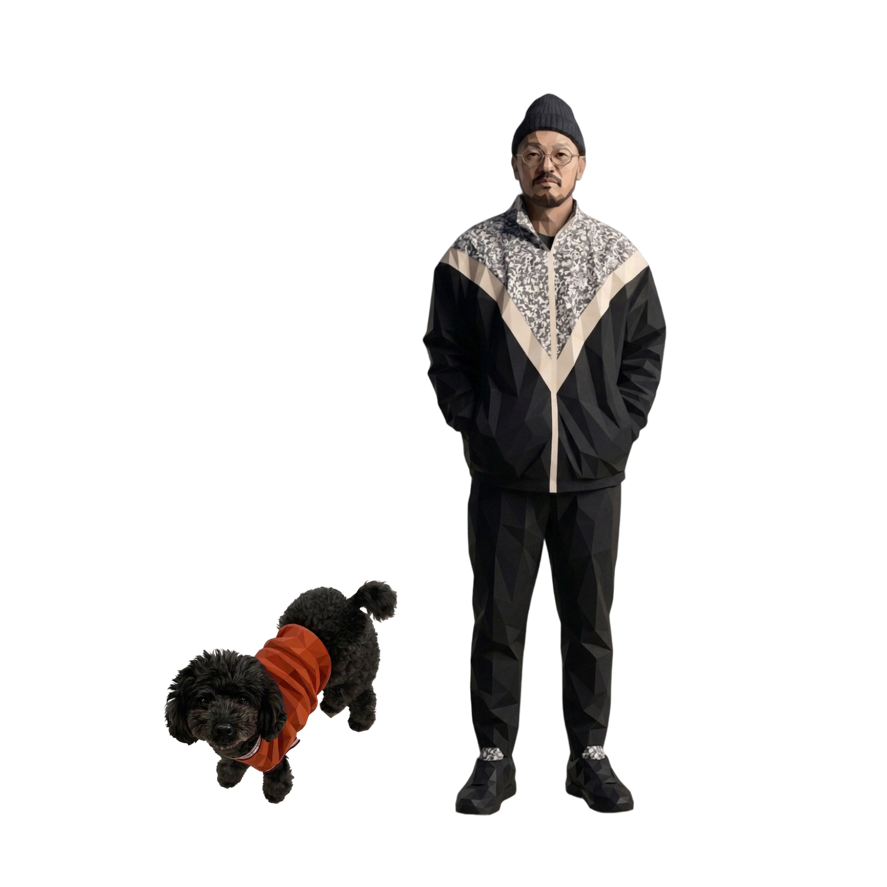

your layout was already a song.
別のUIで作曲しない。Figmaで選んだフレームの「配置」を読んで、音にする。横＝時間、縦＝音程、大きさ＝音量、余白＝休符。
曲を作ろうとしてないのに、あなたのレイアウトは最初から歌っていた。OtO はそれを翻訳して、暴くだけ。

tuned & raw.
同じ一枚の盤面が、二つの顔を持つ。整音＝スケールに乗せ、グリッドに量子化した"曲"。誰が鳴らしても心地よい。誰かに渡す、リリースの面。
生音＝Y座標そのままの微分音を、量子化せずに。整える前の、設計図の生の鼓動。歪な瞬間も晒す。この正直さが、発見の核。
silence is a note.
音数が少ないほど美しい——デザインも音楽も同じ。余白＝休符。BIWAKO SILENCE と地続き。
ミニマルなデザインほど、綺麗で少ない音が鳴る。音数コントロールで、本物の疎さに寄せられる。
layout is the score.
横＝進行、縦＝同時トラック、◉＝選んで起動。別UIを作らず、盤面の配置そのものを譜面にした。
盤を組むことが、曲の構成を組むこと。同期したフレームはレイヤー名に 🎵。

you rescue
yourself.
誰も、助けには来ない。だから、デザインから音を救い出す。見つける行為そのものが救いになる——使う人にも、作る人にも。だから OtO は、ただのプラグインではなく 99letters の作品。
studio × techno.
二枚看板。静けさと余白の〈kinoshita studio〉と、現役テクノ作家〈99letters〉。デザインと音楽、両方を本気でやってきた人間にしか作れない。
サンプラー・EQ・メーター・書き出し——本物のDAW機能を備えるから"おもちゃ"で終わらない。でも一番深い堀は、機能じゃない。耳だ。
who made this.
デザインと音楽、両方を本気でやってきた人間がつくった道具。
だから "おもちゃ" で終わらない。

99letters
「99letters」は、滋賀を拠点に活動する木下貴博のテクノ名義。箏や尺八といった日本の伝統楽器をサンプリングし、ノイズと空間処理で漆黒のテクノに変える——"雅楽テクノ"とも称される、ほかにない音。
2010年代はハウスのプロデューサーとして数々のレコードを重ね、2021年に 99letters 名義へ回帰。『解剖図鑑』は Bandcamp Daily の Album of the Day、『地獄』は英 Phantom Limb、『魔訶不思議』は Disciples からリリース。『翻訳演奏』『己』と作品を重ね、The Wire・Mixmag・Resident Advisor・Bleep・Boomkat・NTS Radio などが取り上げてきた、海外で評価される現役アーティスト。
その人間が"自分のデザインを音にするため"に作ったのが OtO。「作曲じゃなく、発見」。判断は人、翻訳はAI——代表作『翻訳演奏』そのままに。最後の差は、機能じゃなく耳に出る。
your design is already singing.
now, it plays.
あなたのデザインを流し込んで、最初から歌っていた音を聴く。
Figma で開く ↗